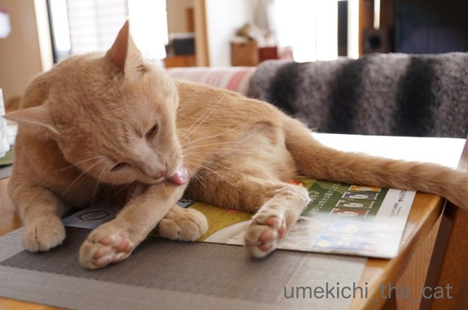
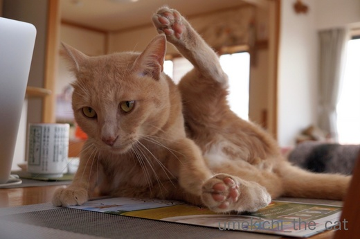
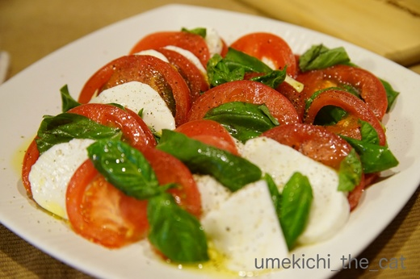
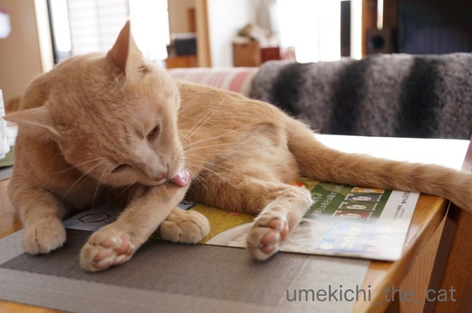
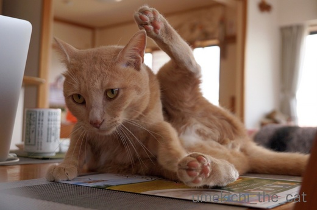
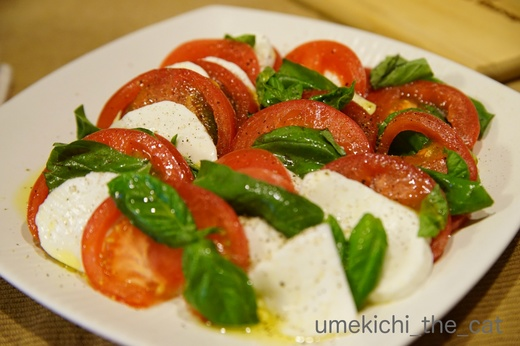

招く手の正体と秋の七草 [梅吉]
PC横でおもむろにグルーミングを始める梅吉さん。

![[猫]](https://blog.ss-blog.jp/_images_e/101.gif) かぜがきっつうてな じゅうはちごうのやつ〜 きづかれしたわ りらっくすせな
かぜがきっつうてな じゅうはちごうのやつ〜 きづかれしたわ りらっくすせな

おおお〜大胆なポーズですね。
でもその足ってどこかで見た様な気がするのですが・・・・・
あっ![[ひらめき]](https://blog.ss-blog.jp/_images_e/151.gif)

これですね！
私を招く手の正体は大胆なポーズで毛づくろいする梅吉さんの後ろ足でした〜。

み〜た〜な〜
幽霊の正体見たりうしろ足 お粗末でした！

そんな梅吉さんがキッチンでくんくんしています。

あ！まとまっている！！カッテージチーズではなさそうな・・・・・

のびるよー。
おっと作、モッツアレラチーズ出来ました。

カプレーゼにしましたよ。美味しかった〜。
 ↑ガブッと一押し↑
↑ガブッと一押し↑
近所の植物園に秋の七草を見に行って来ました。
オミナエシ
ススキ
キキョウ
ナデシコ
フジバカマ 咲いてない・・・汗
クズ 写真撮っていなかったのでウィキペディアからお借りしました
ハギ
秋の七草は各7種の頭文字をとって「おすきなふくは？」って覚えると良いんですね。
植物園の看板に書いてありました。知らなかったなぁ。
紅白のヒガンバナ。これから続々と咲きそうな様子でしたよ。


おおお〜大胆なポーズですね。
でもその足ってどこかで見た様な気がするのですが・・・・・
あっ

これですね！
私を招く手の正体は大胆なポーズで毛づくろいする梅吉さんの後ろ足でした〜。

幽霊の正体見たりうしろ足 お粗末でした！

そんな梅吉さんがキッチンでくんくんしています。

あ！まとまっている！！カッテージチーズではなさそうな・・・・・

のびるよー。
おっと作、モッツアレラチーズ出来ました。

カプレーゼにしましたよ。美味しかった〜。
近所の植物園に秋の七草を見に行って来ました。
オミナエシ
ススキ
キキョウ
ナデシコ
フジバカマ 咲いてない・・・汗
クズ 写真撮っていなかったのでウィキペディアからお借りしました
ハギ
秋の七草は各7種の頭文字をとって「おすきなふくは？」って覚えると良いんですね。
植物園の看板に書いてありました。知らなかったなぁ。
紅白のヒガンバナ。これから続々と咲きそうな様子でしたよ。

カフェオレ色の梅吉

梅吉 2023年8月10日 永眠


梅吉と出会った譲渡会

犬猫の理由なき殺処分ゼロ
妄想広告
UMEKICHI 光

爆発的に早い！
時々攻撃的！
Thanks to Mr.Boss365
爆発的に早い！
時々攻撃的！
Thanks to Mr.Boss365

梅吉さん台風が怖かったのですか? 風がすごかったですものねー。み~た~な~のあられもない格好がかわゆいです。
おっと様のチーズは大成功ですね。キレイに盛られたカプレーゼ! 私の好物です。ヨダレが出ます。
おすきなふくは覚えときま~す。
by zombiekong (2017-09-19 16:10)
男前は毛繕いもキッチリですな！
チーズなんて作っちゃうんですか！尊敬します！
by じゅらまろ (2017-09-19 16:30)
zombiekongさん＞雨風の音には多少びっくりしていましたが
変なスイッチが入って走り回っていました〜^^;
嵐の時は猫が荒れるって聞きましたが、梅吉は荒れる（張り切る）タイプみたいですw
モッツァレラは出来上がった後食塩水に浸すのですがちょっと濃いめだったので
（レシピ通りなんだけど）味がビシッと締まった感じになりました。うまし！！
じゅらまろさん＞梅吉は我が家のおしゃれ番長なのでね〜(*>艸<)
チーズ、本人が大好物なんですよ。でも牛乳が嫌い・・・www
by ちぃ (2017-09-19 17:45)
梅吉さん、思いっきり開脚！しつつのみ～た～な～＾＾余裕？
嵐の夜、うちのは何となくそばに来てました＾＾
なんだろ？と思ったら、なんと自家製モッツァレラチーズ、すごい！
美味しいんでしょうね～～＾＾
by sana (2017-09-19 17:54)
こんにちは
ご訪問、こうちゃんへのお悔やみありがとうございました。
by yhiga-siura (2017-09-19 17:55)
風強かったもんね。大暴れしたんだ～。
毛繕いでリラックスせなな(^-^)
モッツアレラ！おいしそう。レストランみたい～♪
梅吉くんもくんくん気になっちゃうね。私も気になるもの。
七草も可憐です(#^^#)
by emi (2017-09-19 18:01)
後ろ足、ナイスショットですね～(^_^)
カプレーゼ、美味しそうですね。それも自家製だなんて素晴らしいです。
たま～にうちでも食べますが、自家製はバジルの葉っぱのみです。
by kou (2017-09-19 18:10)
チラッと見えるアンヨがそそられますね～紅白の彼岸花きれいですね。
by みぃにゃん (2017-09-19 19:00)
手招きしていると思ったら
可愛い可愛いあんよでしたか♪
お家でモッツァレラチーズが！！
カプレーゼ美味しそうです(*^_^*)
by きぃ (2017-09-19 19:26)
sanaさん＞嵐の夜に寄り添って来てくれるなんてかわいい！
梅吉は怖がるというよりテンション高くなって走っていましたよ^^;
モッツアレラチーズ、仕上げに熱湯の中で揉むのですが
ちょっと回数が少なかったかな？
とっても美味しかったのですがまだ伸び代がありそうですよ＾＾
yhiga-siuraさん＞落ち着きましたらこうちゃんの闘病記
聞かせてくださいね。
まずはゆっくりお休みくださいませm(_ _)m
emiさん＞雨風でテンションが高まったのかおっとの足限定なはずの「足ガブ」
私もされましたよ〜 (-_-メ)
スネに傷持つ女になってしまった・・・・・
モッツァレラ、市販のものよりもしっかりした味に仕上がりました。
美味しかった〜♪
kouさん＞うちのバジルはスーパーのもの(⌒_⌒;
自家製バジルでいただくのも良いですねぇ・・・植えちゃおうかなぁ。
（来年）
みぃにゃんさん＞かわいいアンヨで招かれたら寄って行っちゃいますよね＾＾
彼岸花の見頃は後もう少しかな？綺麗でしたよー。
きぃさん＞はい＾＾あんよで招かれておりましたw
モッツァレラは温度管理がとても面倒なのですが
（それで前回は失敗した？？）
今回はヨーグルトメーカーを使ってみました。
手間がかかるのはあまり変わらない様ですが
鍋に張り付いていなくて良いのがちょっと楽になった・・・との事でした。
私は・・・見てるだけだったの(*>艸<)
by ちぃ (2017-09-19 19:54)
ウチのは風の音を怖がってイカ耳＆まんまる目＆フリーズ、ほんまにあかんたれなんですよ(-_-メ)
梅吉さんの足招き、あらあらかわいい～と近寄ってひょいっと掴んだとたんに猫キック炸裂、幽霊よりも危険かもしれません(^▽^;)
ヒガンバナ、赤は妖艶、白は清楚。
同じ花でもずいぶんイメージが違いますね♪
by ゆきち (2017-09-19 20:32)
わー、すごい！牧場仕上げな、できたてモッツァレラ、美味しそ！
ﾞ☆⌒o(*^ｰﾟ)
梅しゃんの大胆ポーズなのに、肉球がピンクでかわいいー♪
by Ginger (2017-09-19 20:32)
梅吉さん、台風18号、ご無事で何よりです。
私も2009年以来、18番目の台風は
発生する前からマークしていて
今年は大丈夫かなと思ったら、え？何？
日本に向かってUターンかよ！って感じで
ビックリでした。^^;
招く手の招待・・・、あ、いや、、正体（汗）が分かって
やっぱさすが梅さんやな～って思いました♪ ^^;;
by yes_hama (2017-09-19 22:11)
『かぜがきっつうてな じゅうはちごうのやつ〜 きづかれしたわ』って、
分かるわ〜
風は嫌だよね〜
音を連れてくるのが嫌だよね〜
モッツアレラチーズ、大好きです。
やっぱり、カプレーゼですね。
by kiki (2017-09-19 22:45)
わわっ、梅吉さん、ヨガの先生みたいなポーズを
されていたのですね！どれが手でどれが足か再度
見直してしまいました（笑）。すごいわ～♡
モッツァレラチーズって家で作れるものなんですか。
とってもおいしそうで、オシャレな食卓ですネ！
by うっかりくま (2017-09-19 22:52)
やっば…ヾ(*´∀｀*)ﾉ
カプレーゼ美味そうです！！
モッツァレラチーズ手作りとかすごいです！！
やっぱ梅吉さん台風怖かったんですね！！
過ぎ去って良かった良かった！！
by sumi-cyan (2017-09-20 04:09)
ススキと言えば名月ですね。間も無く、彼岸花見物同様楽しみにしています。(^_-)-☆
by 水郷楽人 (2017-09-20 06:05)
てっきり前足だと。
後ろ足だったとはビックリ！
これがクズだったんですね。
お買い物途中の道路脇で咲いてて
「何だろねぇ？」って思ってました＾＾；
by ぽちの輔 (2017-09-20 06:54)
曼珠沙華を撮りに行ってきます(^^♪
by riverwalk (2017-09-20 08:32)
手じゃなくて足だったのねー(笑)
ねえねえ、渋そうな湯飲みが気になる私ｗｗ
何が書かれているんだろうーーー
健康十箇条とか？？
by リュカ (2017-09-20 09:52)
うめ吉さん
![[黒ハート]](https://blog.ss-blog.jp/_images_e/136.gif)
よく足が上がってます♪
チーズが作れるなんて！
高度な技 スゴいなぁ
『おすきなふくは』
そうそう そう覚えるんでした。
春の七草は簡単に言えるのに
秋は指折って つっかえながら
しか 言えないです…
私は藤袴って馴染みがないです。
きっと咲いていても
気が付かないと思います。
by ヨッシー (2017-09-20 15:09)
足だったのか( ﾟДﾟ)
モッツアレラチーズ完成したのですね。カプレーゼ美味しそうです(*^。^*)
by palpal (2017-09-20 16:08)
自作のチーズは美味しそう。
秋の野草満開ですね。
by 響 (2017-09-20 18:36)
ちゃんと自宅警備のお仕事が終了したら身繕いを整えて
最後まできっちりするのがイケメン梅吉さんですよねぇ=(^.^)=
あの招きは「手」だと思ってましたが「足」だったんですね( ^ω^ )
でも可愛いからなんでも招かれちゃいます♪( ´▽｀)
夫さんのモッツァレラチーズ、美味しそうですねぇ（≧∇≦）
by ニッキー (2017-09-20 21:46)
ゆきちさん＞ふふふ(ΦωΦ)こてつくんったらビビりっ子ちゃん！！
梅吉は時々聞き耳を立てていただけでいたって普通・・・というか
変なスイッチが入って歩くたび足をガブガブして来ましたよー(^▽^;)
幽霊は攻撃して来ませんが（たぶん）梅吉は攻撃的ですからね！！
キックとガブガブの二段構えでくるのでお覚悟をw
人間の手が流血の恐怖絵みたいになるかもしれません・・・
Gingerさん＞モッツアレラ、美味しかったですよ〜。
使う牛乳によって味も随分違い、
今回はより牧場仕上げ的な味になりました＾＾
肉球もほんのりピンクに染まりますっ(〃▽〃)
yes_hamaさん＞18号は歴代暴れっこが多いのですね。
去年の日記を見たらやっぱりこの時期台風が通過していて
「家が洗車機に入っている様な風雨だった」と書いてありました。
ただ、台風何号か書いていない・・・^^;
招待の正体・・・(*>艸<)梅吉、期待を裏切りません！
kikiさん＞風で物が飛んだり倒れたりする音も不安を煽りますよね。
梅吉はそんな音に聞き耳を立ててもいましたが
音に興奮したのか走り回ってもいましたよ^^;
美味しいものはシンプルに味わうのが一番！でカプレーゼとなりました(｀_´)ゞ
うっかりくまさん＞このポーズ、
新しく猫のポーズ２として認定されるかもしれません(*>艸<)
が、できる方、いるのでしょうか・・・
モッツアレラ、手間と時間はかかりますが難しくはない、様ですよ。
（私は見てただけ〜w)
sumi-cyanさん＞カプレーゼ美味しかったですよ〜。ワインが進みました♪
台風の被害、我が家の付近は何も被害なしでした。
水郷楽人さん＞今年の中秋の名月は10月４日の様ですね＾＾
お天気が良くて綺麗な月が見えると良いですね〜。
水郷さんの所ではススキの他に採れたての美味しい野菜が
お供えに上がりそうですね！
ぽちの輔さん＞足技が得意な梅吉です(*>艸<)
吉野葛に代表されるので、葛は山に生えていると思っていました。
（私の出身地北海道に葛はありません。）
が、大阪に移り住んで葛がその辺に生い茂っているのを見た時はびっくりしました〜。
riverwalkさん＞riverwalkさん目線の曼珠沙華、楽しみにしていますよ〜＾＾
リュカさん＞あ、湯のみ目に止まっちゃった？
私も写真を見てこの風景の中でちょっと主張しているな・・・
と思っていました。
この湯のみがクローズアップされている記事が・・・と探したら
http://umekichi-the-cat.blog.so-net.ne.jp/2017-01-31
でバッチリ写ってました〜。
ジェフ・ベックとエリック・クラプトン、バリバリロック系ギタリストの
ジョイントコンサートのグッズなんですよ〜。
それが、湯のみ(*>艸<)おっとの宝ですw
ちなみに我が家の健康十箇条
１、食べ過ぎない
２、飲みすぎない
３、飲みすぎない
以下、10まで同じですwwwwww
ヨッシーさん＞梅吉、毎日鍛えてますから！
ラインダンスにも参加できるで♪
秋の七草、私もフジバカマってぜんぜんピンと来ません^^;
今回花が咲いていなかったせいもあり
未だ姿を把握していませんよー( ；∀；)
palpalさん＞ふふふ♡意外だったでしょう〜(*>艸<)
モッツアレラチーズ、今回は上手くいきました。
今回は１リットル（前回は欲張りすぎて２リットルでした）
で作ったので扱いやすかったのかもしれません＾＾
響さん＞時間と手間はかかりますが以外に簡単に作れる様ですよ！
「手作り」が美味しさ5割り増しだったかも＾＾
ようやく過ごしやすくなって来たので秋満喫しなきゃ！ですよね〜(≧▽≦)
ニッキーさん＞高〜く上がった足だけが
背もたれの向こうに見えていたのでした(*>艸<)
モッツァレラチーズ、低温殺菌牛乳にレンネット（凝固剤みたいなもの？）
が手にはいれば時間と手間はかかりますが割と簡単にできる様です。
チーズ好きなニッキーさんも手作りチーズいかがですか？
by ちぃ (2017-09-20 22:13)
台風一過、梅吉くんもリラックスできたようで！
ご主人、チーズを家で作ってしまうのですね、すごい。
「秋の七草」問う言葉を知っていても、
意識することがなかった、ことに気が付きました（笑）
秋を感じさせていただきました！
by うめむす (2017-09-20 22:32)
わー！チーズがどんどん進化していますね♪
美味しそうです＾＾
ニャンコのこのポーズ、ヨガみたいで好きです( ´艸｀)
by マーヤ (2017-09-21 00:28)
うめむすさん＞関西圏内では大きな被害はなかった様で
梅吉も安心したのでしょう＾＾
チーズ、私も大好きなんですが作ろうなんて（めんどうで）
思ってもみませんでした^^;
家で作ると手作り感でより一層美味しい！！
うめむすさんもいかがですか？＾＾
マーヤさん＞今回は上手くいきましたよ〜。
また作って欲しいからいっぱい褒めておきました(*>艸<)
新猫のポーズとして申請したいですよね〜。
誰に申請すればいいんだろう・・・とりあえすインド？？( ´艸｀)
by ちぃ (2017-09-21 17:23)